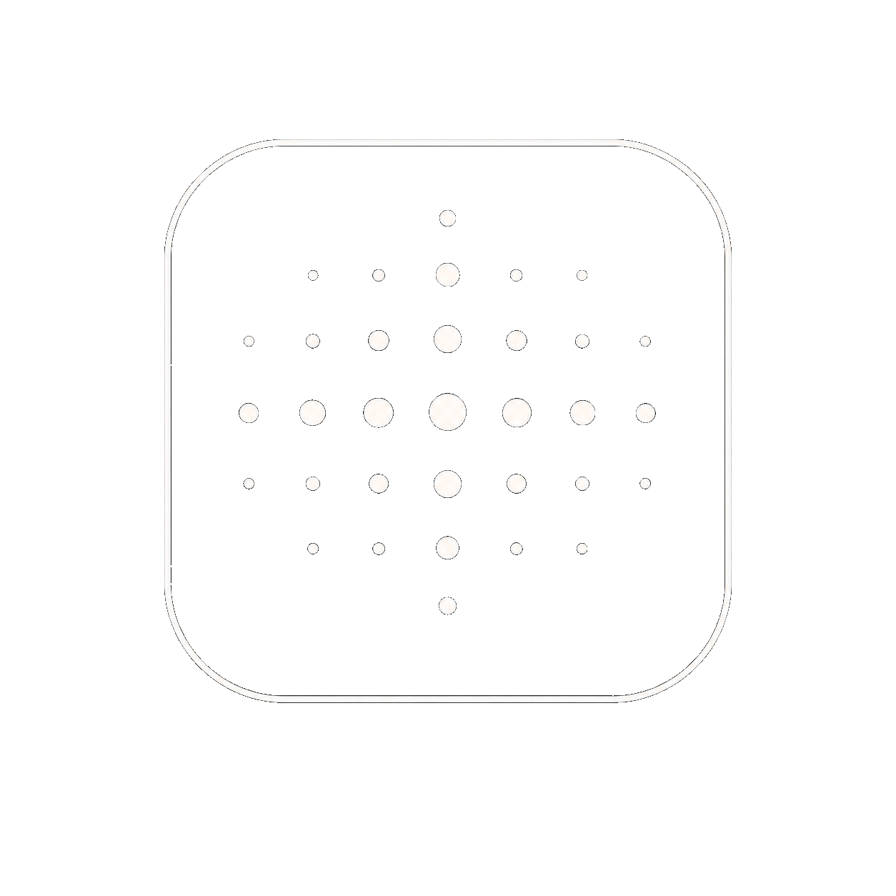

gLitCh Labs
Social Composer
Upload background
Size
Native (background)
Instagram Square · 1080×1080
Story · 1080×1920
Landscape · 1200×630
X / Twitter · 1600×900
Grid
Invert grid
Clear marks
Clear Everything
Save
Download PNG
Drop a background image here
or use Upload background